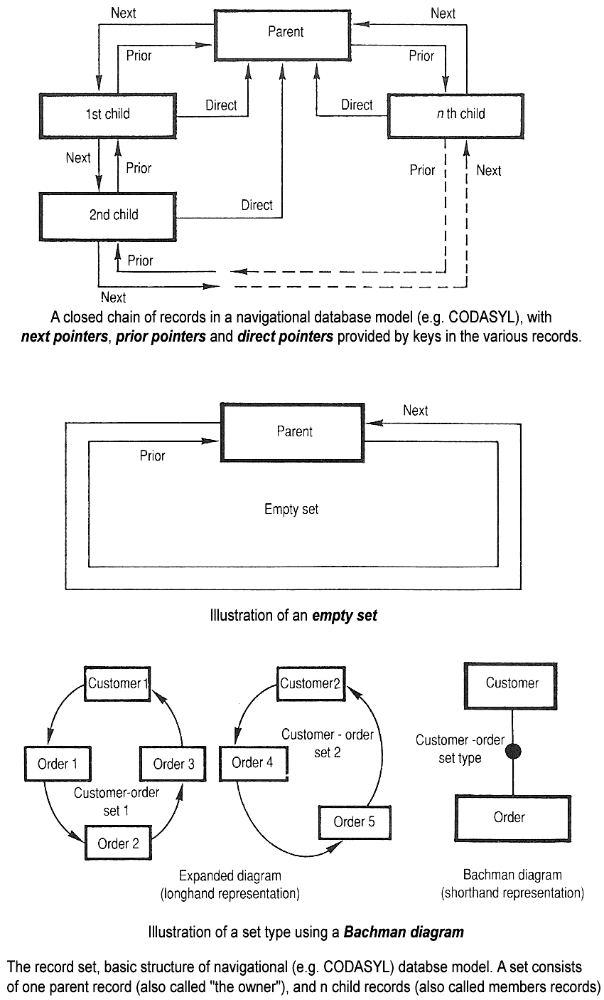

have grown in orders of magnitude. These performance increases were
enabled by the technology progress in the areas of processors, computer memory,
computer storage, and computer networks.
The concept of a database was made possible by the emergence of direct access
storage media such as magnetic disks, which became widely available in the mid 1960s;
earlier systems relied on sequential storage of data on magnetic tape.
The subsequent development of database technology can be divided into three
eras based on data model or structure: navigational, SQL/relational, and post-relational.

and the CODASYL model (network model).
These were characterized by the use of pointers (often physical disk addresses)
to follow relationships from one record to another.
The relational model, first proposed in 1970 by Edgar F. Codd,
departed from this tradition by insisting that applications should
search for data by content, rather than by following links.
The relational model employs sets of ledger-style tables, each used for a different type of entity.
Only in the mid-1980s did computing hardware become powerful enough
to allow the wide deployment of relational systems (DBMSs plus applications).
By the early 1990s, however, relational systems dominated in all large-scale data processing
applications, and as of 2018 they remain dominant: IBM DB2, Oracle, MySQL,
and Microsoft SQL Server are the most searched DBMS.
The dominant database language, standardised SQL for the relational model,
has influenced database languages for other data models.

Object databases were developed in the 1980s to overcome the inconvenienceof object–relational impedance mismatch, which led to the coining of the term
"post-relational" and also the development of hybrid object–relational databases.
The next generation of post-relational databases in the late 2000s became known as
NoSQL databases, introducing fast key–value stores and document-oriented databases.
A competing "next generation" known as NewSQL databases attempted new
implementations that retained the relational/SQL model while aiming to match
the high performance of NoSQL compared to commercially available relational DBMSs.